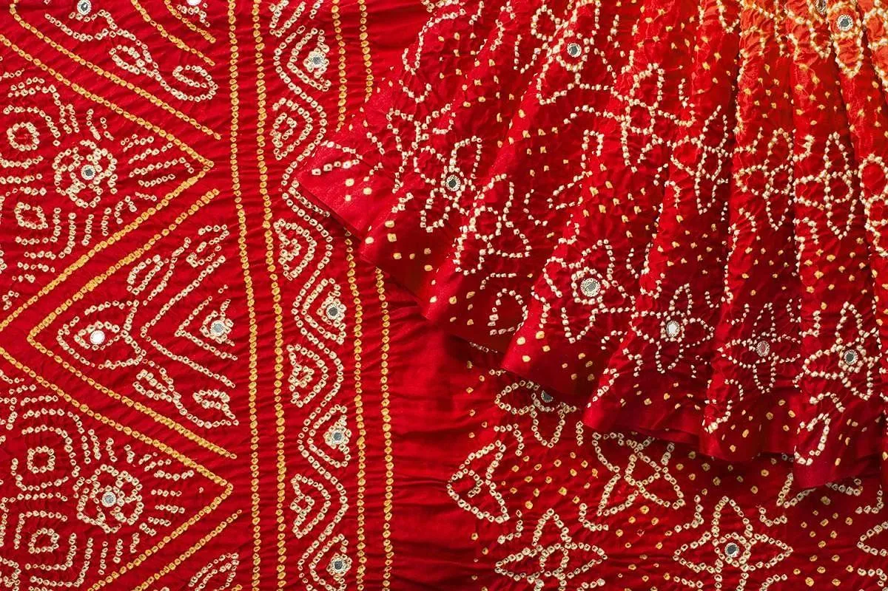
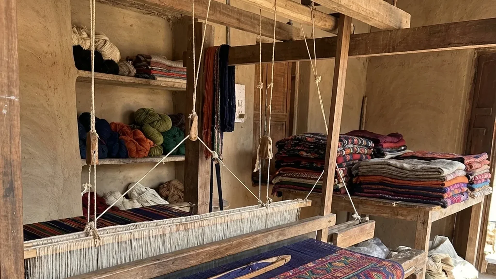
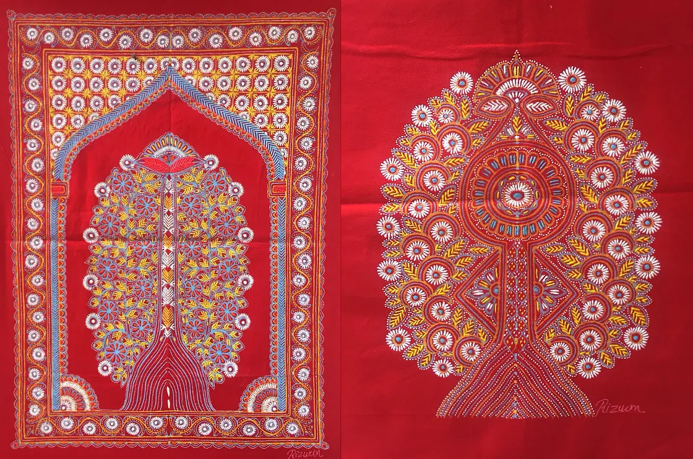
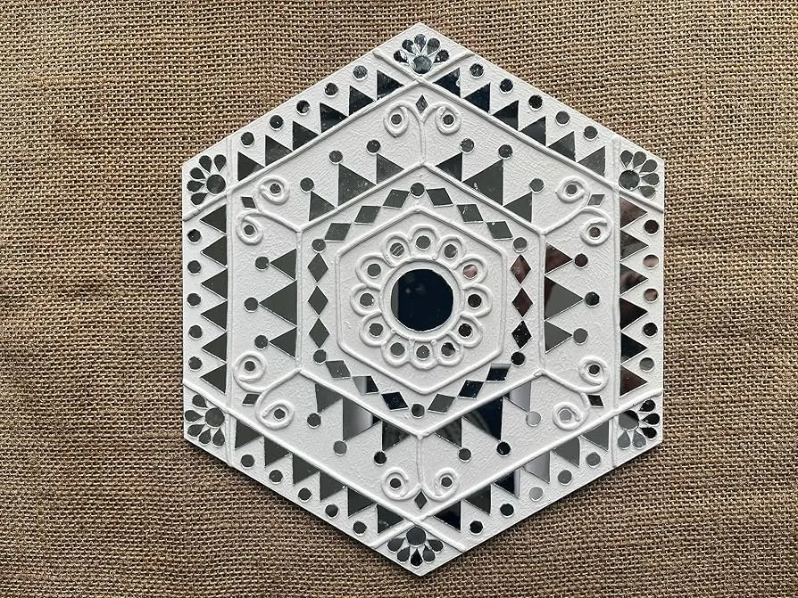
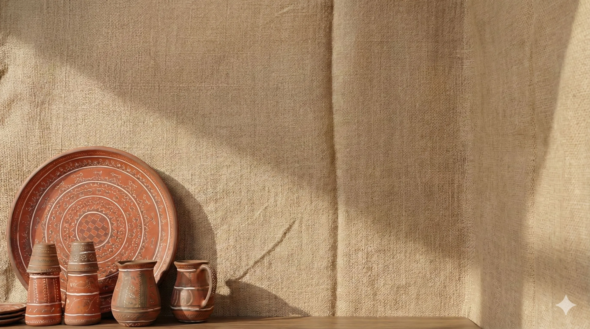
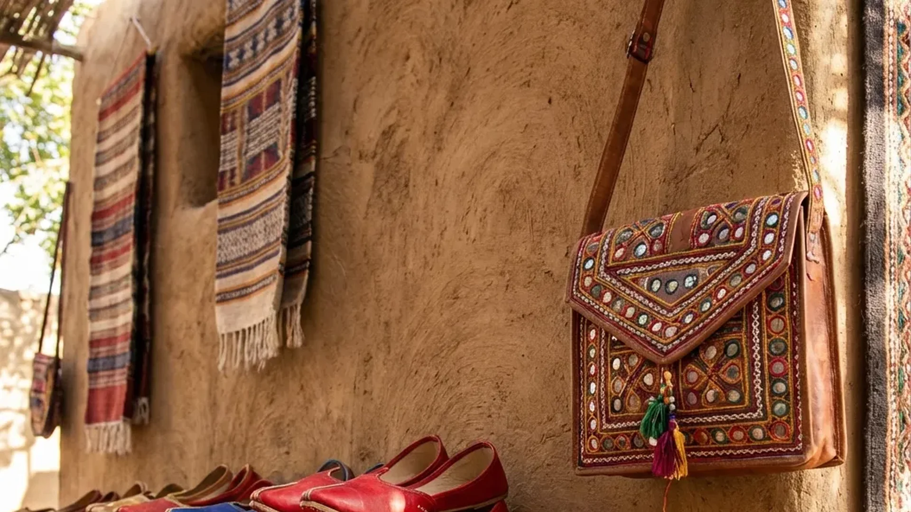

Kutch is a living museum of color and craft. Every village keeps a unique tradition alive — from the hypnotic geometry of Ajrakh to the delicate knots of Bandhani, from rare Rogan painting to the bold embroidery of Rabari artisans. These handmade forms carry stories of resilience, identity, and beauty shaped across generations in Gujarat's most dramatic landscape.
Textile Arts
The soul of Kutchi craftsmanship

Ajrakh
Ancient geometric block printing using natural dyes like indigo and madder. A 4000-year-old tradition from the Indus Valley.

Bandhani
Intricate tie-dye technique creating beautiful dotted patterns. Each dot is hand-tied before dyeing, creating thousands of tiny circles.

Kutch Weaving
Vibrant handloom weaving known for its intricate extra-weft designs. The village of Bhujodi is famous for this craft.
Rare & Unique Arts
Crafts found nowhere else in the world

Rogan Art
A rare 400-year-old oil-based painting on fabric, practiced by only one family in Nirona village. The Khatri family are the last guardians of this dying art.

Lippan Kaam
Traditional mud and mirror work that adorns the walls of Bhungas (circular mud houses). Created by Rabari and Ahir women using clay, dung, and mirror pieces.
Traditional Crafts
Everyday artistry passed through generations

Khavda Pottery
Distinctive painted pottery from Northern Kutch using local clay and natural colors. Known for its unique red and white geometric patterns.

Leather Art
Handcrafted leather goods decorated with threadwork and traditional motifs. The Meghwal community excels in this craft.

Sudi & Chappu
The art of crafting sharp, embellished knives and nutcrackers. Made by the Lohana community in villages near Bhuj.
Artisan Villages
Where to experience crafts firsthand
🎨 Bhujodi
Just 8km from Bhuj, this village is the weaving hub of Kutch. Watch artisans at their looms and shop directly from workshops.
🖌️ Ajrakhpur
Home to the renowned Ismail Khatri family. Witness the 17-step Ajrakh printing process using 100% natural dyes.
✨ Nirona
The only village in the world where Rogan art is practiced. Visit the Khatri family's workshop to see this rare art.
🏺 Khavda
Northern gateway to the Rann, known for distinctive pottery. Also the starting point for the White Rann.
Tips for Craft Lovers
- Buy Direct : Purchase from artisans in villages to ensure fair prices and authenticity. Middlemen in city shops often mark up significantly.
- Ask Questions : Artisans love sharing their craft. Ask about techniques, materials, and the stories behind patterns.
- Check Materials : Authentic Ajrakh uses natural dyes (indigo, madder). Chemical dyes have a different smell and feel.
- Support Preservation : Many crafts are endangered. Your purchase helps keep traditions alive for future generations.
- Visit During Festivals : Rann Utsav (Nov-Feb) features craft exhibitions. Bhujodi holds an annual craft fair.